Procedura
An LLM agent that writes 3D objects as editable programs, one named part at a time, with materials and moving joints.
Ph.D. student at Nanjing University, working on 3D generation, reconstruction, and agentic 3D modeling.

Procedura, 2026. Agentic 3D modeling with procedural control.
An LLM agent that writes 3D objects as editable programs, one named part at a time, with materials and moving joints.
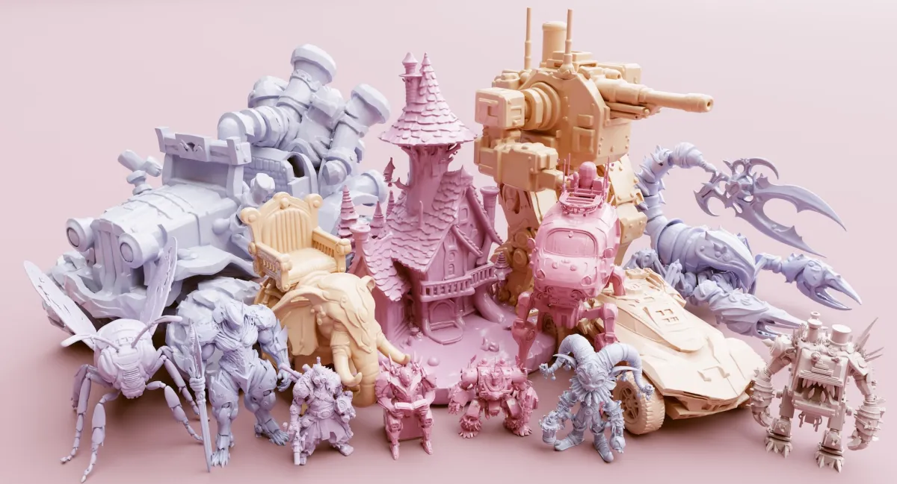
Latent-free diffusion transformers that generate raw SDF voxel grids directly.
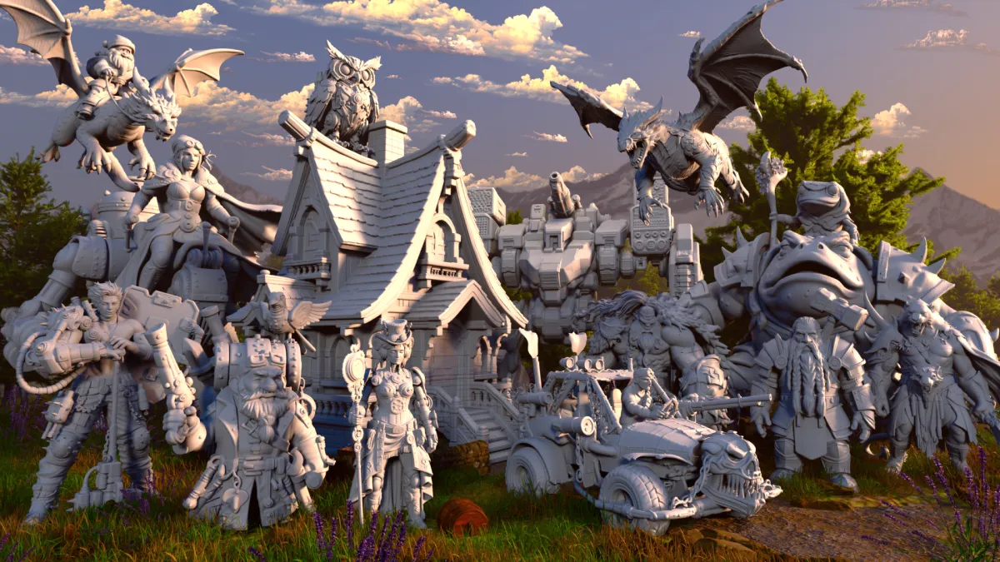
A large-scale video dataset with spatial annotations, built for world models and spatial intelligence.
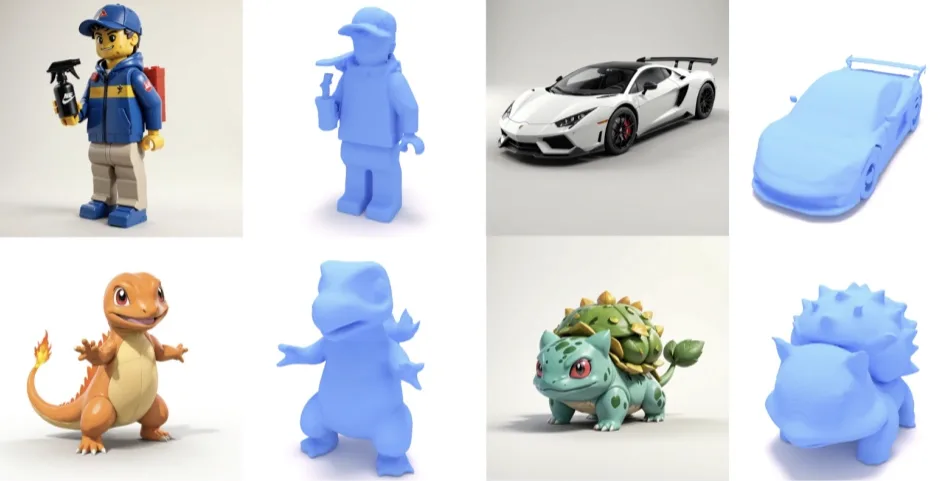
Consistent PBR material generation through standardized material representations.
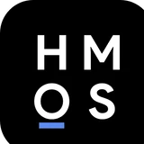
Huawei · HarmonyOS 7 Spatial Recon Kit On-device 3D Gaussian Splatting: capture a scene on a phone and reconstruct it in minutes. I built the on-device training and rendering platform. Learn moreFrom a single video, generate it from many camera angles. Drag on an iPad to change the viewpoint while it plays.
Change the camera on a live video stream. A four-step causal model runs on any video in the browser.
The same multiview videos, viewed in stereo on Apple Vision Pro as a window you can look around.
Procedura now runs inside Codex and Claude Code through MCP.
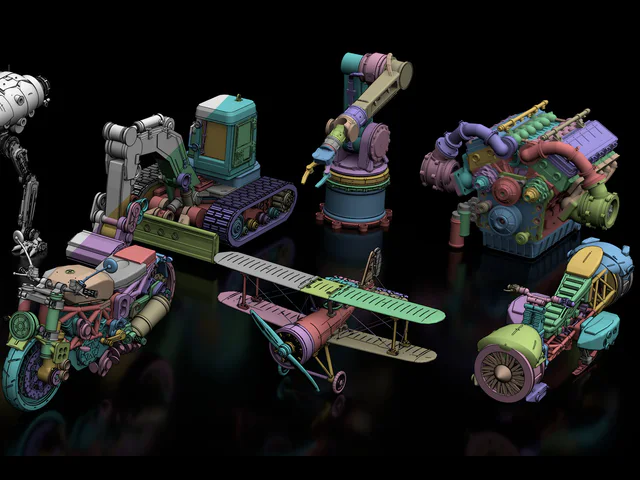
New paper: Procedura, an agent that writes 3D objects as editable programs.
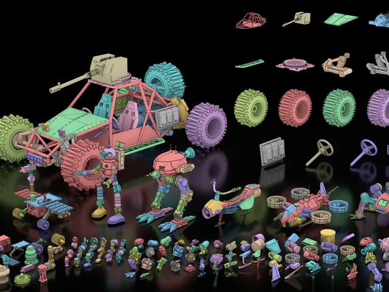
Two papers, Direct3D-V3 and MIKU, accepted to SIGGRAPH Asia 2026 (ACM TOG).
New benchmark: P3D-Bench, for parametric 3D generation with MLLMs.
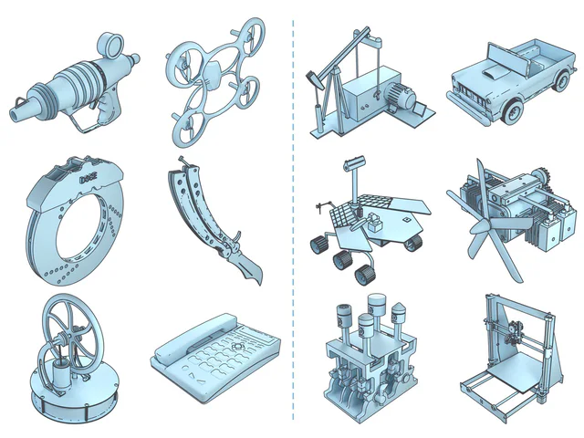
Two papers, SpatialVID and TEXTRIX, accepted to CVPR 2026.
Anime-Ready accepted to ICLR 2026.
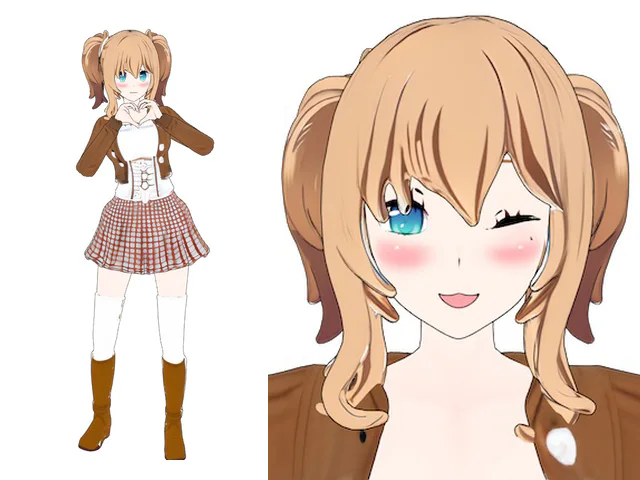
New paper: SpatialVID, a video dataset for world models and spatial intelligence.
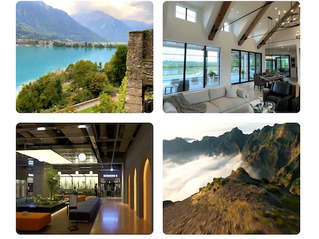
Direct3D-S2 accepted to NeurIPS 2025.
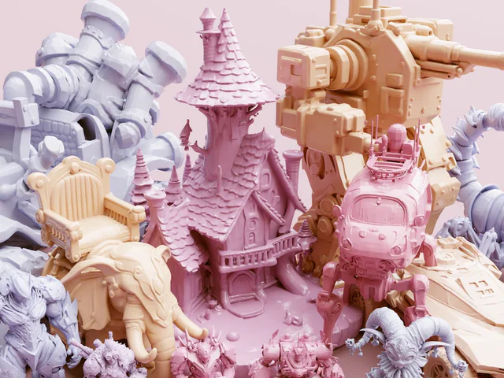
Align Your Rhythm accepted to ICCV 2025.
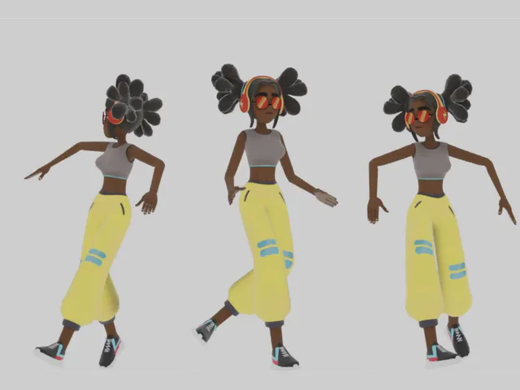
Released Direct3D-S2, with code and models.
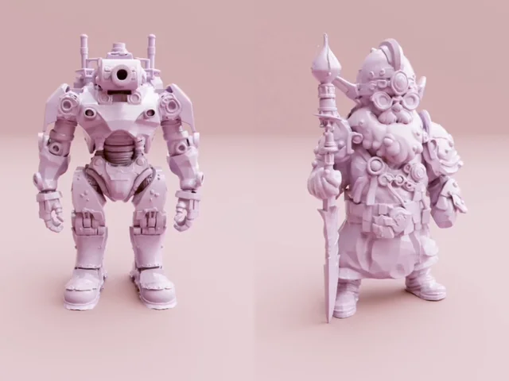
Started a Computer Vision Research Internship at Apple.
Two papers, Direct3D and FastDrag, accepted to NeurIPS 2024.
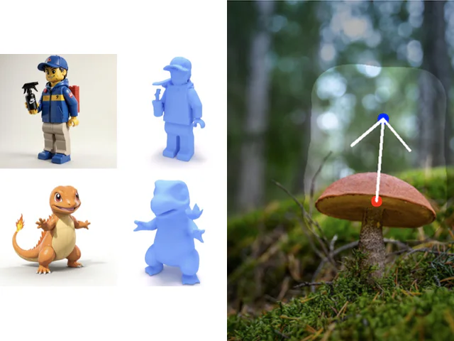
Three ECCV 2024 papers: Relightable 3D Gaussian, STAG4D, and UniDream.
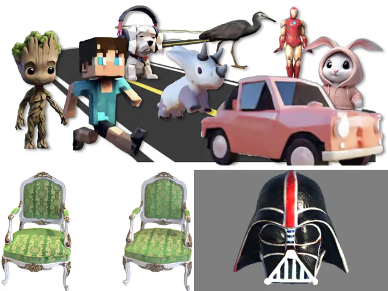
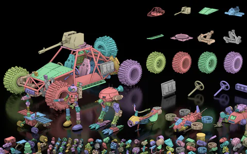
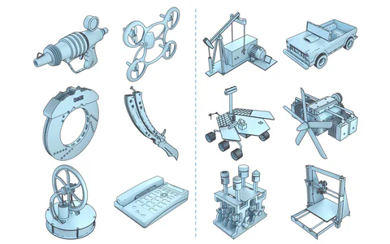
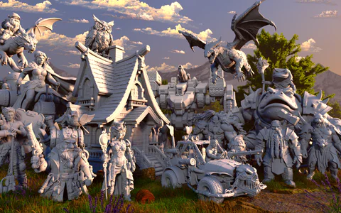
SIGGRAPH Asia 2026 (ACM TOG)
SIGGRAPH Asia 2026 (ACM TOG)
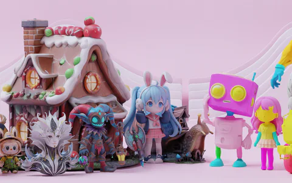
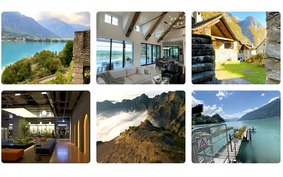
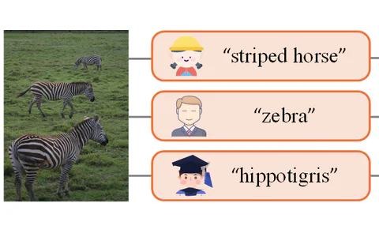
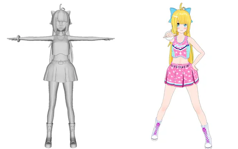
ICLR 2026
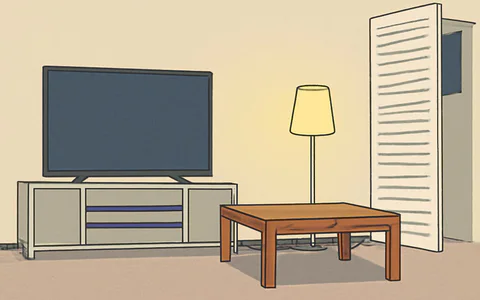
ICASSP 2026
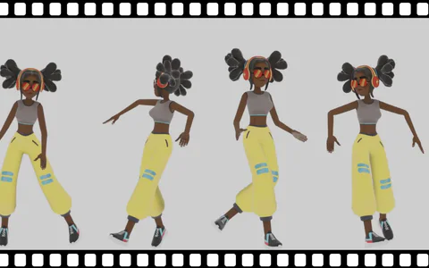
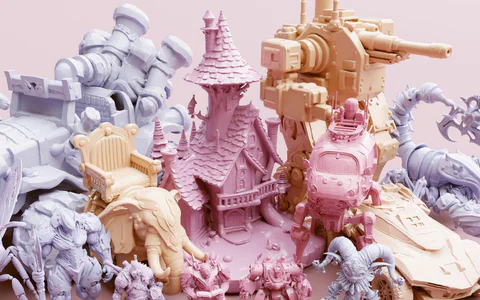
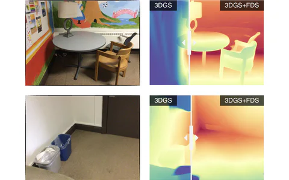
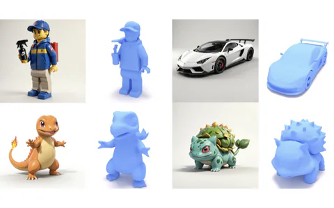
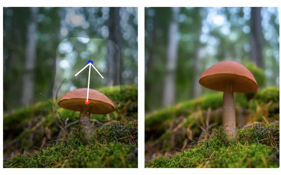
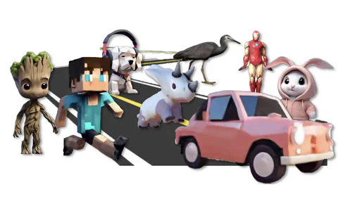
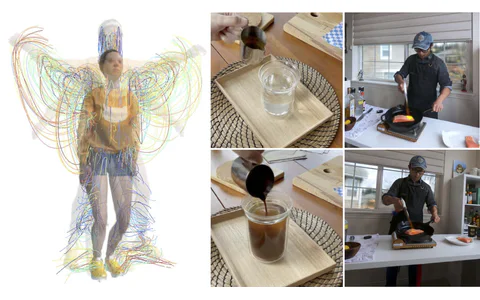
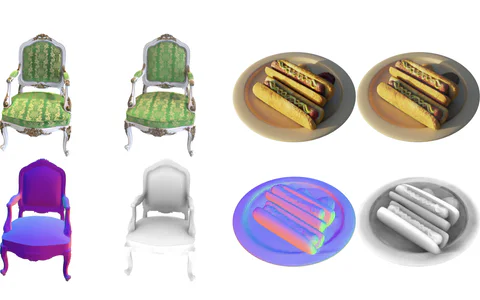
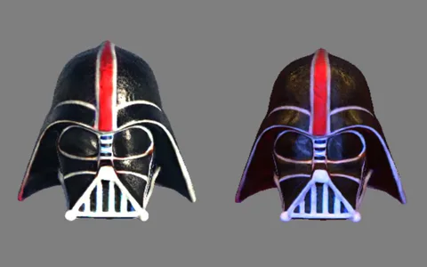
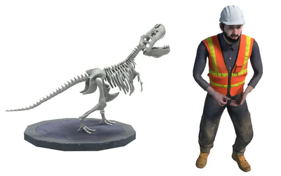
Youtian Lin 林尤添
I'm a Ph.D. student at Nanjing University, advised by Prof. Yao Yao, Prof. Xun Cao, and Prof. Tieniu Tan. I was recently a Computer Vision Research Intern at Apple.
Before NJU, I pursued a Ph.D. at the Harbin Institute of Technology. I earned my M.S. from Harbin Engineering University in 2021, advised by Prof. Jian Guan.
I've also worked at the 3D generation startups DreamTech (Neural4D), VAST (Tripo AI), and Taichi (Meshy AI), where I contributed to their early 3D generation breakthroughs.
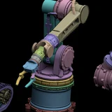
Procedura Agentic 3D modeling with editable parts. Runs in Codex and Claude Code via MCP.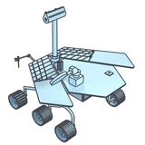
P3D-Bench Benchmark and leaderboard for parametric 3D generation with MLLMs.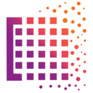
Pointrix Differentiable point-based rendering library for 3D reconstruction and rendering.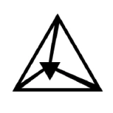
threestudio-3DGS Gaussian Splatting extension for the threestudio framework.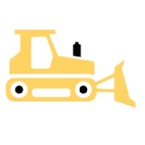
nerfacc Fast NeRF acceleration toolkit. Contributor.